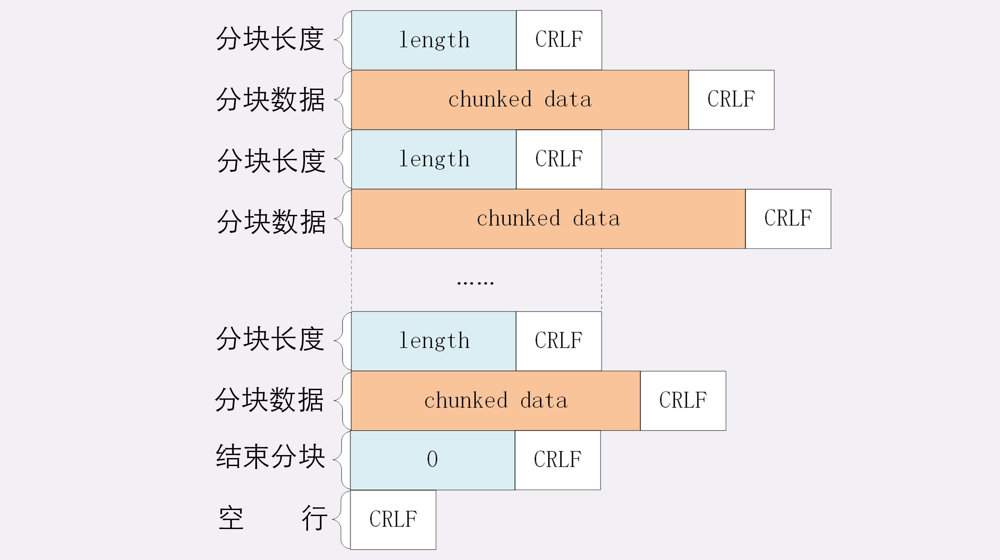
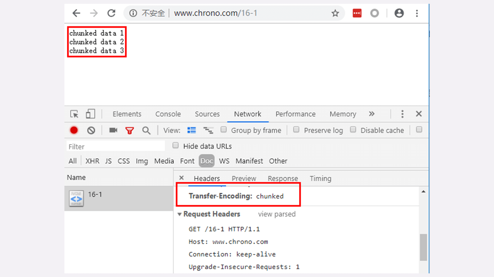
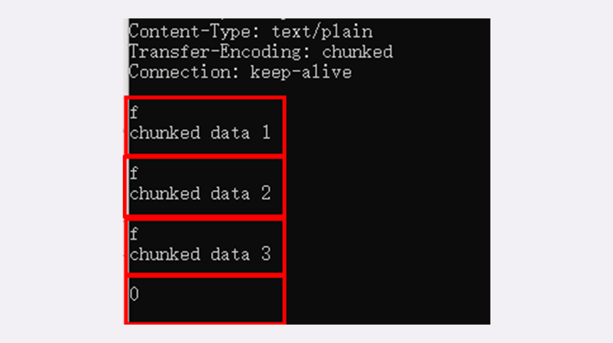
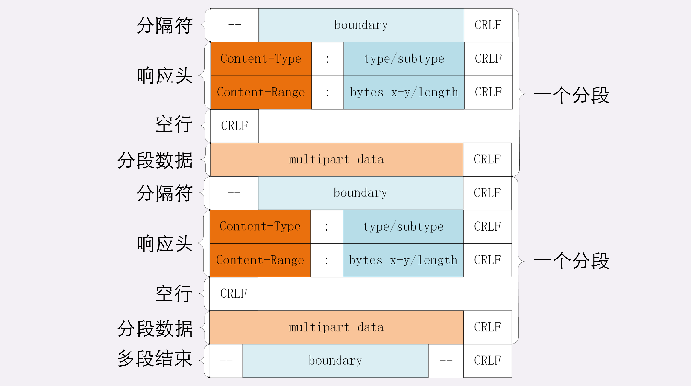
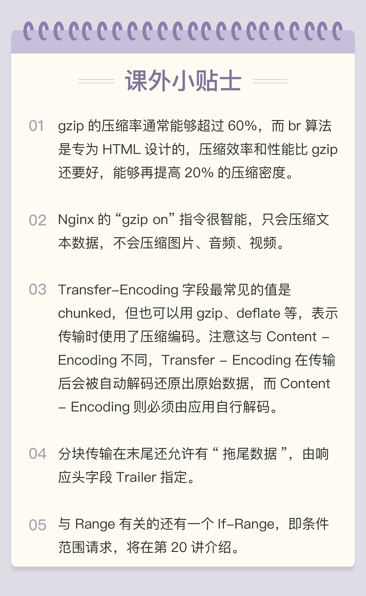

- 00 开篇词｜To Be a HTTP Hero.md.html
- 01 时势与英雄：HTTP的前世今生.md.html
- 02 HTTP是什么？HTTP又不是什么？.md.html
- 03 HTTP世界全览（上）：与HTTP相关的各种概念.md.html
- 04 HTTP世界全览（下）：与HTTP相关的各种协议.md.html
- 05 常说的“四层”和“七层”到底是什么？“五层”“六层”哪去了？.md.html
- 06 域名里有哪些门道？.md.html
- 07 自己动手，搭建HTTP实验环境.md.html
- 08 键入网址再按下回车，后面究竟发生了什么？.md.html
- 09 HTTP报文是什么样子的？.md.html
- 10 应该如何理解请求方法？.md.html
- 11 你能写出正确的网址吗？.md.html
- 12 响应状态码该怎么用？.md.html
- 13 HTTP有哪些特点？.md.html
- 14 HTTP有哪些优点？又有哪些缺点？.md.html
- 15 海纳百川：HTTP的实体数据.md.html
- 16 把大象装进冰箱：HTTP传输大文件的方法.md.html
- 17 排队也要讲效率：HTTP的连接管理.md.html
- 18 四通八达：HTTP的重定向和跳转.md.html
- 19 让我知道你是谁：HTTP的Cookie机制.md.html
- 20 生鲜速递：HTTP的缓存控制.md.html
- 21 良心中间商：HTTP的代理服务.md.html
- 22 冷链周转：HTTP的缓存代理.md.html
- 23 HTTPS是什么？SSLTLS又是什么？.md.html
- 24 固若金汤的根本（上）：对称加密与非对称加密.md.html
- 25 固若金汤的根本（下）：数字签名与证书.md.html
- 26 信任始于握手：TLS1.2连接过程解析.md.html
- 27 更好更快的握手：TLS1.3特性解析.md.html
- 28 连接太慢该怎么办：HTTPS的优化.md.html
- 29 我应该迁移到HTTPS吗？.md.html
- 30 时代之风（上）：HTTP2特性概览.md.html
- 31 时代之风（下）：HTTP2内核剖析.md.html
- 32 未来之路：HTTP3展望.md.html
- 33 我应该迁移到HTTP2吗？.md.html
- 34 Nginx：高性能的Web服务器.md.html
- 35 OpenResty：更灵活的Web服务器.md.html
- 36 WAF：保护我们的网络服务.md.html
- 37 CDN：加速我们的网络服务.md.html
- 38 WebSocket：沙盒里的TCP.md.html
- 39 HTTP性能优化面面观（上）.md.html
- 40 HTTP性能优化面面观（下）.md.html
- 结束语 做兴趣使然的Hero.md.html
16 把大象装进冰箱：HTTP传输大文件的方法
上次我们谈到了 HTTP 报文里的 body，知道了 HTTP 可以传输很多种类的数据，不仅是文本，也能传输图片、音频和视频。
早期互联网上传输的基本上都是只有几 K 大小的文本和小图片，现在的情况则大有不同。网页里包含的信息实在是太多了，随随便便一个主页 HTML 就有可能上百 K，高质量的图片都以 M 论，更不要说那些电影、电视剧了，几 G、几十 G 都有可能。
相比之下，100M 的光纤固网或者 4G 移动网络在这些大文件的压力下都变成了“小水管”，无论是上传还是下载，都会把网络传输链路挤的“满满当当”。
所以，如何在有限的带宽下高效快捷地传输这些大文件就成了一个重要的课题。这就好比是已经打开了冰箱门（建立连接），该怎么把大象（文件）塞进去再关上门（完成传输）呢？
今天我们就一起看看 HTTP 协议里有哪些手段能解决这个问题。
数据压缩
还记得上一讲中说到的“数据类型与编码”吗？如果你还有印象的话，肯定能够想到一个最基本的解决方案，那就是“数据压缩”，把大象变成小猪佩奇，再放进冰箱。
通常浏览器在发送请求时都会带着“Accept-Encoding”头字段，里面是浏览器支持的压缩格式列表，例如 gzip、deflate、br 等，这样服务器就可以从中选择一种压缩算法，放进“Content-Encoding”响应头里，再把原数据压缩后发给浏览器。
如果压缩率能有 50%，也就是说 100K 的数据能够压缩成 50K 的大小，那么就相当于在带宽不变的情况下网速提升了一倍，加速的效果是非常明显的。
不过这个解决方法也有个缺点，gzip 等压缩算法通常只对文本文件有较好的压缩率，而图片、音频视频等多媒体数据本身就已经是高度压缩的，再用 gzip 处理也不会变小（甚至还有可能会增大一点），所以它就失效了。
不过数据压缩在处理文本的时候效果还是很好的，所以各大网站的服务器都会使用这个手段作为“保底”。例如，在 Nginx 里就会使用“gzip on”指令，启用对“text/html”的压缩。
分块传输
在数据压缩之外，还能有什么办法来解决大文件的问题呢？
压缩是把大文件整体变小，我们可以反过来思考，如果大文件整体不能变小，那就把它“拆开”，分解成多个小块，把这些小块分批发给浏览器，浏览器收到后再组装复原。
这样浏览器和服务器都不用在内存里保存文件的全部，每次只收发一小部分，网络也不会被大文件长时间占用，内存、带宽等资源也就节省下来了。
这种“化整为零”的思路在 HTTP 协议里就是“chunked”分块传输编码，在响应报文里用头字段“Transfer-Encoding: chunked”来表示，意思是报文里的 body 部分不是一次性发过来的，而是分成了许多的块（chunk）逐个发送。
这就好比是用魔法把大象变成“乐高积木”，拆散了逐个装进冰箱，到达目的地后再施法拼起来“满血复活”。
分块传输也可以用于“流式数据”，例如由数据库动态生成的表单页面，这种情况下 body 数据的长度是未知的，无法在头字段“Content-Length”里给出确切的长度，所以也只能用 chunked 方式分块发送。
“Transfer-Encoding: chunked”和“Content-Length”这两个字段是互斥的，也就是说响应报文里这两个字段不能同时出现，一个响应报文的传输要么是长度已知，要么是长度未知（chunked），这一点你一定要记住。
下面我们来看一下分块传输的编码规则，其实也很简单，同样采用了明文的方式，很类似响应头。
- 每个分块包含两个部分，长度头和数据块；
- 长度头是以 CRLF（回车换行，即\r\n）结尾的一行明文，用 16 进制数字表示长度；
- 数据块紧跟在长度头后，最后也用 CRLF 结尾，但数据不包含 CRLF；
- 最后用一个长度为 0 的块表示结束，即“0\r\n\r\n”。
听起来好像有点难懂，看一下图就好理解了：

实验环境里的 URI“/16-1”简单地模拟了分块传输，可以用 Chrome 访问这个地址看一下效果：

不过浏览器在收到分块传输的数据后会自动按照规则去掉分块编码，重新组装出内容，所以想要看到服务器发出的原始报文形态就得用 Telnet 手工发送请求（或者用 Wireshark 抓包）：
GET /16-1 HTTP/1.1
Host: www.chrono.com
因为 Telnet 只是收到响应报文就完事了，不会解析分块数据，所以可以很清楚地看到响应报文里的 chunked 数据格式：先是一行 16 进制长度，然后是数据，然后再是 16 进制长度和数据，如此重复，最后是 0 长度分块结束。

范围请求
有了分块传输编码，服务器就可以轻松地收发大文件了，但对于上 G 的超大文件，还有一些问题需要考虑。
比如，你在看当下正热播的某穿越剧，想跳过片头，直接看正片，或者有段剧情很无聊，想拖动进度条快进几分钟，这实际上是想获取一个大文件其中的片段数据，而分块传输并没有这个能力。
HTTP 协议为了满足这样的需求，提出了“范围请求”（range requests）的概念，允许客户端在请求头里使用专用字段来表示只获取文件的一部分，相当于是客户端的“化整为零”。
范围请求不是 Web 服务器必备的功能，可以实现也可以不实现，所以服务器必须在响应头里使用字段“Accept-Ranges: bytes”明确告知客户端：“我是支持范围请求的”。
如果不支持的话该怎么办呢？服务器可以发送“Accept-Ranges: none”，或者干脆不发送“Accept-Ranges”字段，这样客户端就认为服务器没有实现范围请求功能，只能老老实实地收发整块文件了。
请求头Range是 HTTP 范围请求的专用字段，格式是“bytes=x-y”，其中的 x 和 y 是以字节为单位的数据范围。
要注意 x、y 表示的是“偏移量”，范围必须从 0 计数，例如前 10 个字节表示为“0-9”，第二个 10 字节表示为“10-19”，而“0-10”实际上是前 11 个字节。
Range 的格式也很灵活，起点 x 和终点 y 可以省略，能够很方便地表示正数或者倒数的范围。假设文件是 100 个字节，那么：
- “0-”表示从文档起点到文档终点，相当于“0-99”，即整个文件；
- “10-”是从第 10 个字节开始到文档末尾，相当于“10-99”；
- “-1”是文档的最后一个字节，相当于“99-99”；
- “-10”是从文档末尾倒数 10 个字节，相当于“90-99”。
服务器收到 Range 字段后，需要做四件事。
第一，它必须检查范围是否合法，比如文件只有 100 个字节，但请求“200-300”，这就是范围越界了。服务器就会返回状态码416，意思是“你的范围请求有误，我无法处理，请再检查一下”。
第二，如果范围正确，服务器就可以根据 Range 头计算偏移量，读取文件的片段了，返回状态码“206 Partial Content”，和 200 的意思差不多，但表示 body 只是原数据的一部分。
第三，服务器要添加一个响应头字段Content-Range，告诉片段的实际偏移量和资源的总大小，格式是“bytes x-y/length”，与 Range 头区别在没有“=”，范围后多了总长度。例如，对于“0-10”的范围请求，值就是“bytes 0-10/100”。
最后剩下的就是发送数据了，直接把片段用 TCP 发给客户端，一个范围请求就算是处理完了。
你可以用实验环境的 URI“/16-2”来测试范围请求，它处理的对象是“/mime/a.txt”。不过我们不能用 Chrome 浏览器，因为它没有编辑 HTTP 请求头的功能（这点上不如 Firefox 方便），所以还是要用 Telnet。
例如下面的这个请求使用 Range 字段获取了文件的前 32 个字节：
GET /16-2 HTTP/1.1
Host: www.chrono.com
Range: bytes=0-31
返回的数据是（去掉了几个无关字段）：
HTTP/1.1 206 Partial Content
Content-Length: 32
Accept-Ranges: bytes
Content-Range: bytes 0-31/96
// this is a plain text json doc
有了范围请求之后，HTTP 处理大文件就更加轻松了，看视频时可以根据时间点计算出文件的 Range，不用下载整个文件，直接精确获取片段所在的数据内容。
不仅看视频的拖拽进度需要范围请求，常用的下载工具里的多段下载、断点续传也是基于它实现的，要点是：
- 先发个 HEAD，看服务器是否支持范围请求，同时获取文件的大小；
- 开 N 个线程，每个线程使用 Range 字段划分出各自负责下载的片段，发请求传输数据；
- 下载意外中断也不怕，不必重头再来一遍，只要根据上次的下载记录，用 Range 请求剩下的那一部分就可以了。
多段数据
刚才说的范围请求一次只获取一个片段，其实它还支持在 Range 头里使用多个“x-y”，一次性获取多个片段数据。
这种情况需要使用一种特殊的 MIME 类型：“multipart/byteranges”，表示报文的 body 是由多段字节序列组成的，并且还要用一个参数“boundary=xxx”给出段之间的分隔标记。
多段数据的格式与分块传输也比较类似，但它需要用分隔标记 boundary 来区分不同的片段，可以通过图来对比一下。

每一个分段必须以“- -boundary”开始（前面加两个“-”），之后要用“Content-Type”和“Content-Range”标记这段数据的类型和所在范围，然后就像普通的响应头一样以回车换行结束，再加上分段数据，最后用一个“- -boundary- -”（前后各有两个“-”）表示所有的分段结束。
例如，我们在实验环境里用 Telnet 发出有两个范围的请求：
GET /16-2 HTTP/1.1
Host: www.chrono.com
Range: bytes=0-9, 20-29
得到的就会是下面这样：
HTTP/1.1 206 Partial Content
Content-Type: multipart/byteranges; boundary=00000000001
Content-Length: 189
Connection: keep-alive
Accept-Ranges: bytes
--00000000001
Content-Type: text/plain
Content-Range: bytes 0-9/96
// this is
--00000000001
Content-Type: text/plain
Content-Range: bytes 20-29/96
ext json d
--00000000001--
报文里的“- -00000000001”就是多段的分隔符，使用它客户端就可以很容易地区分出多段 Range 数据。
小结
今天我们学习了 HTTP 传输大文件相关的知识，在这里做一下简单小结：
- 压缩 HTML 等文本文件是传输大文件最基本的方法；
- 分块传输可以流式收发数据，节约内存和带宽，使用响应头字段“Transfer-Encoding: chunked”来表示，分块的格式是 16 进制长度头 + 数据块；
- 范围请求可以只获取部分数据，即“分块请求”，实现视频拖拽或者断点续传，使用请求头字段“Range”和响应头字段“Content-Range”，响应状态码必须是 206；
- 也可以一次请求多个范围，这时候响应报文的数据类型是“multipart/byteranges”，body 里的多个部分会用 boundary 字符串分隔。
要注意这四种方法不是互斥的，而是可以混合起来使用，例如压缩后再分块传输，或者分段后再分块，实验环境的 URI“/16-3”就模拟了后一种的情形，你可以自己用 Telnet 试一下。
课下作业
- 分块传输数据的时候，如果数据里含有回车换行（\r\n）是否会影响分块的处理呢？
- 如果对一个被 gzip 的文件执行范围请求，比如“Range: bytes=10-19”，那么这个范围是应用于原文件还是压缩后的文件呢？
欢迎你把自己的学习体会写在留言区，与我和其他同学一起讨论。如果你觉得有所收获，也欢迎把文章分享给你的朋友。
